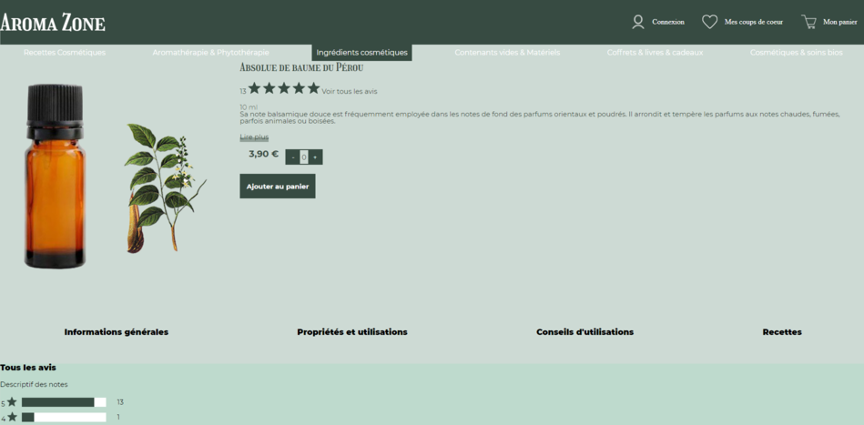
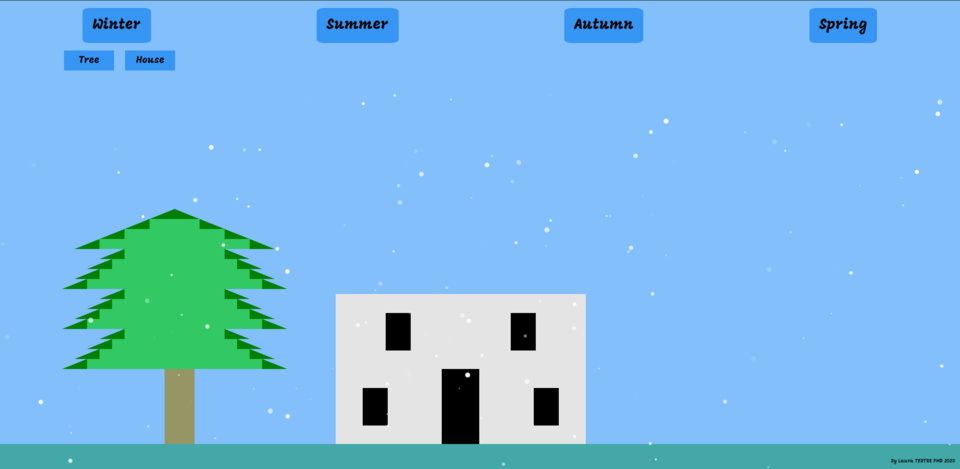

Laura Tertre
Etudiante à HETIC en PMD (Prépa Master Digital) Bac +3
Situé à Montreuil, 93210Recherche un stage Développeuse Web pour une durée de 3 à 4 mois à partir du 15 juin 2020
Dans Paris intra-muros ou banlieue parisienneMes projets

Prise en compte de l'aspect UX et UI.
Maquette et Intégration d'une refonte d'un site e-commerce
effectué à HETIC Refonte du site Aroma-zone après un benchmark du site.Prise en compte de l'aspect UX et UI.
- Utilisation d'un Burger Menu en JavaScript en version mobile
- Utilisation d'un panier en JavaScript

Animation créatif en HTML/CSS/JS
effectué à HETIC Utiliser un maximum d'animations, transitions ou d'interactions en CSS et/ou JS.- Utilisation de bouton interactifs en JavaScript
- Utilisation de transitions en CSS
- Non responsive
Maquette et Intégration d'une refonte d'un site e-commerce
effectué à HETIC A travers un benchmark et une recherche utilisateur à l'aide d'interview, nous avons imaginer une maquette qu'on a intégré.- HTML
- CSS
- JavaScript
Animation créatif en HTML/CSS/JS
effectué à HETIC Utiliser un maximum d'animations, transitions ou d'interactions en CSS et/ou JS.- HTML
- CSS
- JavaScript